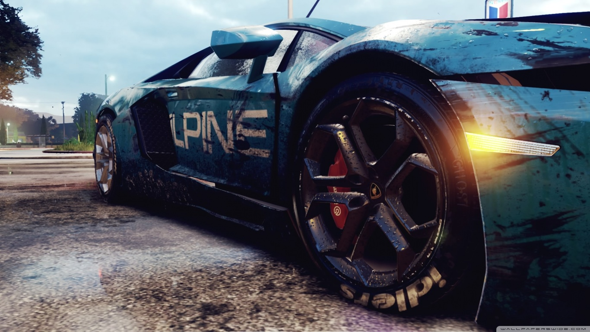

Ubisoft

- CPU: Core i5 6600K / AMD FX-8350
- RAM: 8 GB
- OS: 64-bit Windows 7, Windows 8.1 and Windows 10
- VIDEO CARD: DirectX 11.0 Compatible video card with 2 GB VRAM (AMD Radeon HD 7850)
- SOUND CARD: Yes
- FREE DISK SPACE: 50 GB
- DEDICATED VIDEO RAM: 2048 MB
Farcry SytemRequirements:
- CPU: Pentium 4 or Athlon XP
- CPU SPEED: 2 GHz
- RAM: 512 MB
- OS: Windows
- VIDEO CARD: DirectX 9.0 compliant video card with 64 MB RAM (GeForce FX+ / Radeon 9500+)
- TOTAL VIDEO RAM: 128 MB
- VERTEX SHADER: 2.0
- DIRECTX VERSION: 9.0b (included)
- FREE DISK SPACE: 4 GB

NFS SytemRequirements:
- OS: 64-bit Windows 7 or later
- Processor: Intel Core i5-4690 or equivalent with 4 hardware threads
- Memory: 8GB RAM
- Graphics Card: NVIDIA GeForce GTX 970 4GB, AMD Radeon R9 290 4GB)
- Hard Drive: 30 GB free space
WatchDogs SytemRequirements:
- CPU: Intel Core i5 3470 @ 3.2 GHz, AMD FX 8120 @ 3.9 GHz
- CPU SPEED: Info
- RAM: 8 GB
- OS: Windows 7 SP1, Windows 8.1, Windows 10 (64bit versions only)
- VIDEO CARD: NVIDIA GeForce GTX 780 | AMD Radeon R9 290, with 3GB VRAM or better
- VERTEX SHADER: 5.0
- SOUND CARD: DirectX compatible using the latest drivers
- FREE DISK SPACE: 50 GB